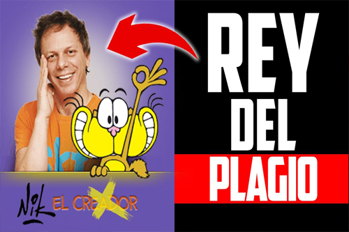
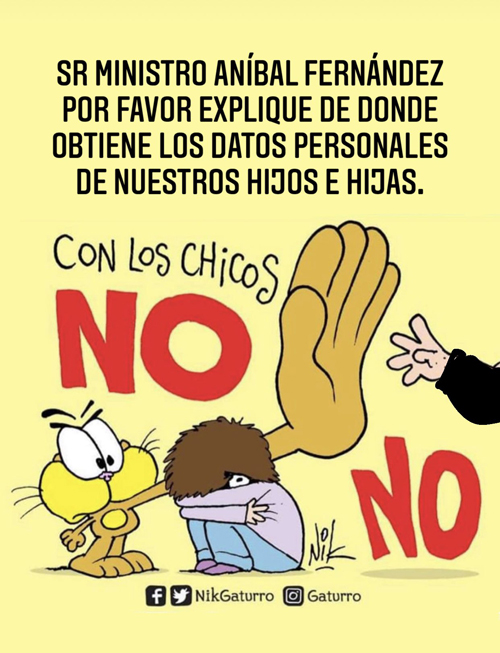

Cristian Dzwonik nació en Buenos Aires el 18 de marzo de 1971. Conocido por su apodo Nik, es un historietista argentino creador del personaje Gaturro y trabaja en el diario La Nación. Comenzó a dibujar a los 12 años, como estudiante en la escuela de dibujo de Carlos Garaycochea. Realizó sus estudios secundarios en el Colegio Nacional de Buenos Aires, del cual se graduó en 1988, paso por la Facultad de Arquitectura, Diseño y Urbanismo de la Universidad de Buenos Aires. A los 14 años publicó un dibujo propio en la revista Patoruzú. En 1992 ingresó en el diario La Nación como humorista gráfico en el chiste político del cuerpo del diario. Desde 1994 colabora con el semanario Noticias. En 1996 apareció por primera vez el personaje Gaturro en La Nación y en 2010 se estrenó Gaturro: la película, dirigida por Gustavo Cova. También trabajó en medios gráficos como Muy Interesante, El Cronista, y la Revista Noticias. Ha editado libros y trabajó haciendo su típico humor gráfico en el programa Periodismo para todos de Jorge Lanata. Colaboró con la sede argentina del Fondo de las Naciones Unidas para la Infancia (Unicef) en varias ocasiones. En 2010 la empresa argentina de juguetes Rasti presentó una escultura de bloques de Gaturro para un evento del Fondo. En 2015 Nik participó del programa solidario anual de recaudación de fondos Un sol para los chicos y Gaturro aparece en materiales oficiales de la agencia para la promoción de lectura.
Nik ha recibido críticas y acusaciones públicas de plagio a humoristas locales y de otros países, entre los que se incluyen a Quino, Caloi, Fontanarrosa, Paz, Rudy, Kappel y Bill Watterson, entre otros. Los casos también afectarían a pequeños historietistas del interior del país. Esto llevó a usuarios a recopilar los casos de presunta copia de Nik en un documento Google llamado "Libro negro". En agosto de 2012, el diario El Sol Online indicó que habría plagiado al humorista Quino (creador de Mafalda) en varias de sus historietas. En julio de 2016 en el marco de la Feria Internacional del Libro de Lima, Perú se esperaba la presencia de Nik el jueves 28 de julio en un encuentro organizado por la embajada argentina y la Cámara Peruana del Libro. Al día siguiente, viernes 29 de julio, estaría presente en el conversatorio «Trazos y Trama». Sin embargo una semana antes se le solicitó a Nik que no concurriera debido a las quejas de los caricaturistas peruanos, que afirmaron que lo rechazaban porque «degrada el oficio de dibujante con lo que consideramos plagios a otros autores». 2017 se lo acusó de publicar en sus redes sociales una ilustración del dibujante de Mar del Plata Elsart, a la que le habría recortado la firma del autor, y un año después Sandra Gaitán, una historietista colombiana, lo acusó por plagio de sus trabajos. En 2020 Luca D’Urbino, diseñador grafíco y dibujante, mostró en redes sociales una presunta copia del historietista a su portada de la revista británica The Economist.
En el año 2002, el diario argentino La Nación publicó un chiste de Nik en el cual el caricaturista realizó una comparación entre Graciela Camaño y un simio. Según el humorista Miguel Rep el montaje photoshopgráfico que el domingo 26 de mayo publicó el diario La Nación es de una discriminación tan ofensiva que merecería un repudio general de opinión pública, o de periodistas. Pero, claro, es sólo un chistecito y a continuación manifestó que renunciaba al premio Konex para el que estaba ternado junto con Nik, indicando que con este señor Nik no quiero que me metan en la misma bolsa. El 11 de octubre de 2021, el ministro de Seguridad de la Nación Aníbal Fernández publicó en Twitter un mensaje en respuesta a las críticas de Nik al programa gubernamental de financiación de viajes de egresados durante ese año. Fernández defendió la propuesta e hizo alusión a los subsidios que el gobierno porteño otorgó a la Escuela ORT. El historietista publicó que iría a la justicia ya que interpretó las palabras del ministro como una amenaza, al tratarse de la institución educativa a la que asistieron sus hijas. Tras ello, Fernández pidió disculpas y aclaró que desconocía este dato.

Contactos
Mundo Gaturro
Bibliografía
Transportes
Personajes
Galería